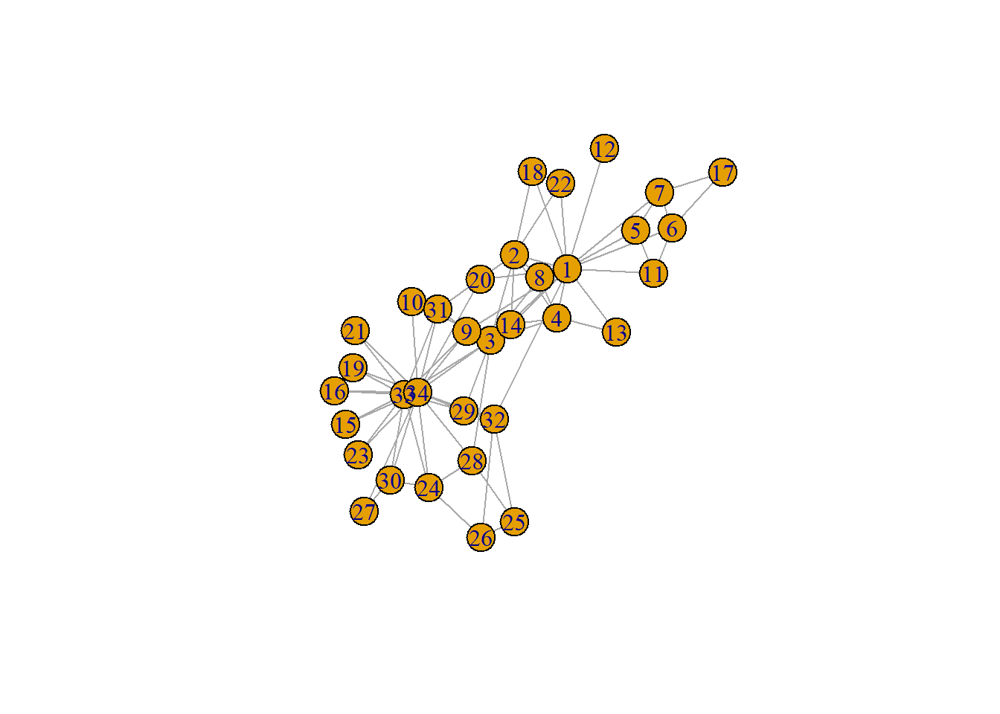
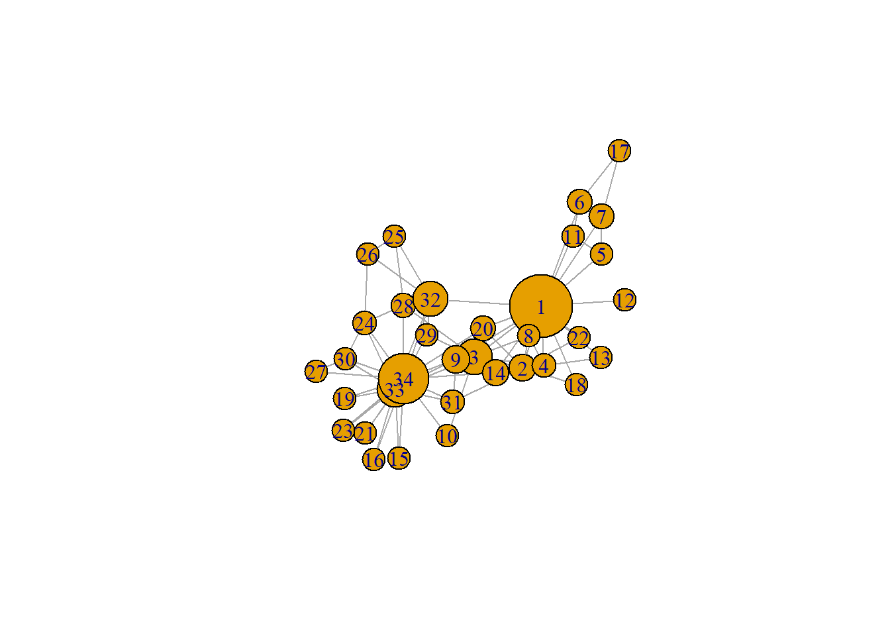
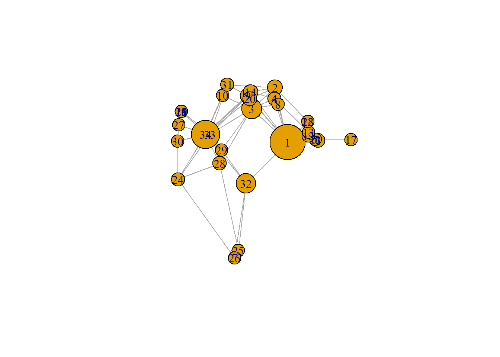
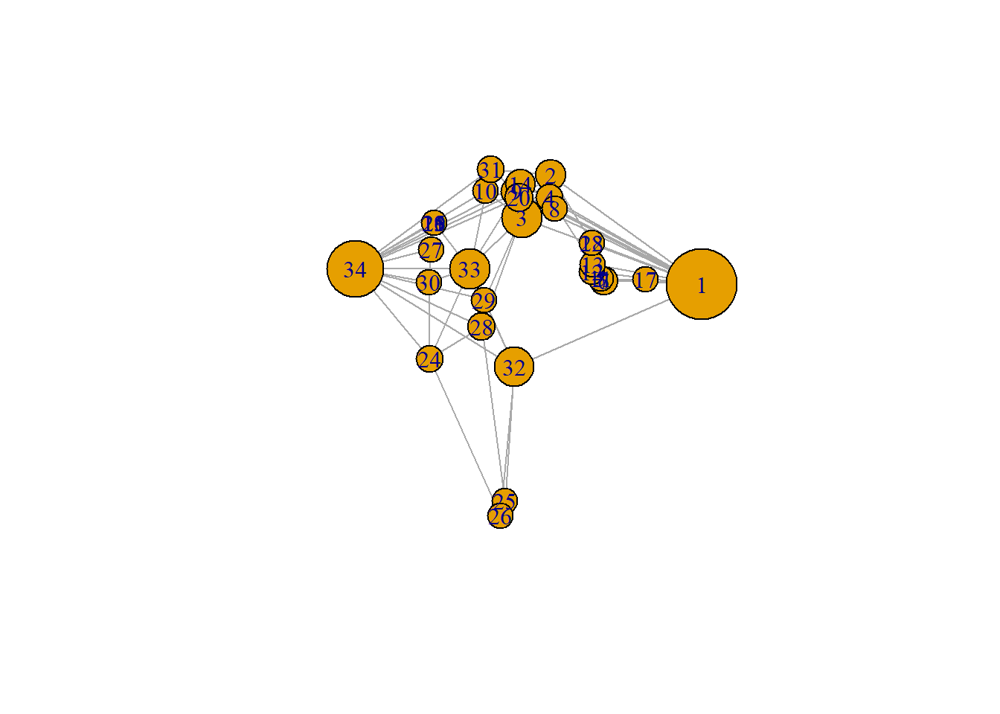
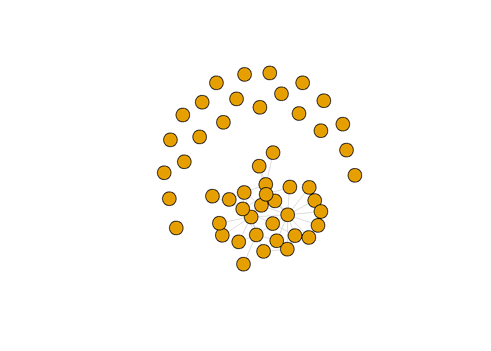
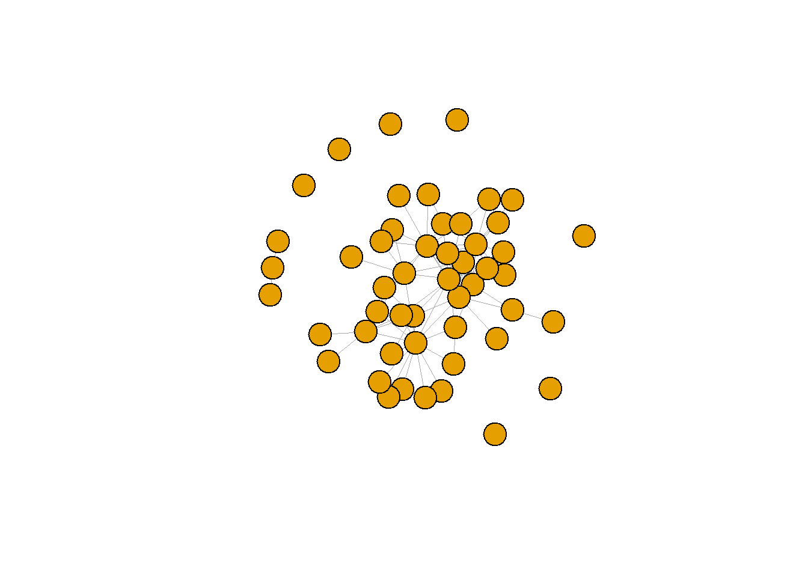
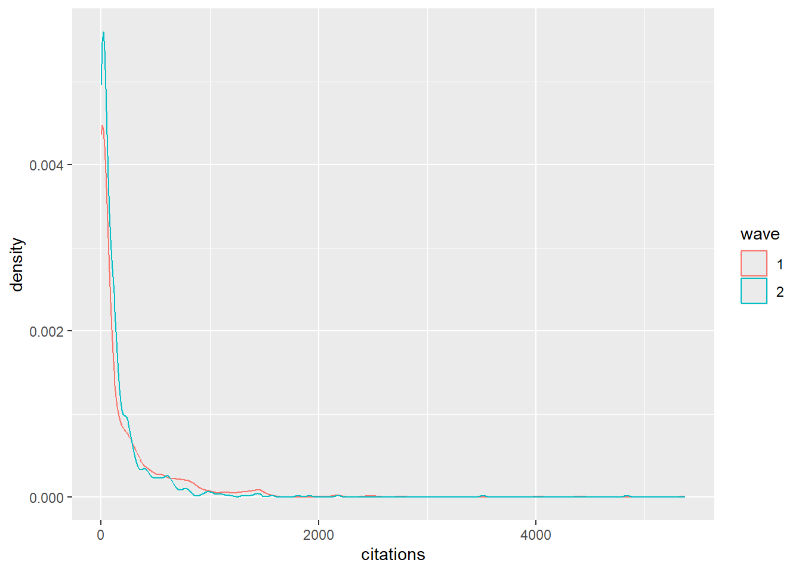

rm(list = ls())
#install.packages("sna")
library(openalexR)
library(tidyverse)
require(igraph)
g <- make_graph("Zachary")
plot(g)
gmat <- as_adjacency_matrix(g, type = "both", sparse = FALSE)
gmat## [,1] [,2] [,3] [,4] [,5] [,6] [,7] [,8] [,9] [,10] [,11] [,12] [,13] [,14] [,15] [,16] [,17]
## [1,] 0 1 1 1 1 1 1 1 1 0 1 1 1 1 0 0 0
## [2,] 1 0 1 1 0 0 0 1 0 0 0 0 0 1 0 0 0
## [3,] 1 1 0 1 0 0 0 1 1 1 0 0 0 1 0 0 0
## [4,] 1 1 1 0 0 0 0 1 0 0 0 0 1 1 0 0 0
## [5,] 1 0 0 0 0 0 1 0 0 0 1 0 0 0 0 0 0
## [6,] 1 0 0 0 0 0 1 0 0 0 1 0 0 0 0 0 1
## [7,] 1 0 0 0 1 1 0 0 0 0 0 0 0 0 0 0 1
## [8,] 1 1 1 1 0 0 0 0 0 0 0 0 0 0 0 0 0
## [9,] 1 0 1 0 0 0 0 0 0 0 0 0 0 0 0 0 0
## [10,] 0 0 1 0 0 0 0 0 0 0 0 0 0 0 0 0 0
## [11,] 1 0 0 0 1 1 0 0 0 0 0 0 0 0 0 0 0
## [12,] 1 0 0 0 0 0 0 0 0 0 0 0 0 0 0 0 0
## [13,] 1 0 0 1 0 0 0 0 0 0 0 0 0 0 0 0 0
## [14,] 1 1 1 1 0 0 0 0 0 0 0 0 0 0 0 0 0
## [15,] 0 0 0 0 0 0 0 0 0 0 0 0 0 0 0 0 0
## [16,] 0 0 0 0 0 0 0 0 0 0 0 0 0 0 0 0 0
## [17,] 0 0 0 0 0 1 1 0 0 0 0 0 0 0 0 0 0
## [18,] 1 1 0 0 0 0 0 0 0 0 0 0 0 0 0 0 0
## [19,] 0 0 0 0 0 0 0 0 0 0 0 0 0 0 0 0 0
## [20,] 1 1 0 0 0 0 0 0 0 0 0 0 0 0 0 0 0
## [21,] 0 0 0 0 0 0 0 0 0 0 0 0 0 0 0 0 0
## [22,] 1 1 0 0 0 0 0 0 0 0 0 0 0 0 0 0 0
## [23,] 0 0 0 0 0 0 0 0 0 0 0 0 0 0 0 0 0
## [24,] 0 0 0 0 0 0 0 0 0 0 0 0 0 0 0 0 0
## [25,] 0 0 0 0 0 0 0 0 0 0 0 0 0 0 0 0 0
## [26,] 0 0 0 0 0 0 0 0 0 0 0 0 0 0 0 0 0
## [27,] 0 0 0 0 0 0 0 0 0 0 0 0 0 0 0 0 0
## [28,] 0 0 1 0 0 0 0 0 0 0 0 0 0 0 0 0 0
## [29,] 0 0 1 0 0 0 0 0 0 0 0 0 0 0 0 0 0
## [30,] 0 0 0 0 0 0 0 0 0 0 0 0 0 0 0 0 0
## [31,] 0 1 0 0 0 0 0 0 1 0 0 0 0 0 0 0 0
## [32,] 1 0 0 0 0 0 0 0 0 0 0 0 0 0 0 0 0
## [33,] 0 0 1 0 0 0 0 0 1 0 0 0 0 0 1 1 0
## [34,] 0 0 0 0 0 0 0 0 1 1 0 0 0 1 1 1 0
## [,18] [,19] [,20] [,21] [,22] [,23] [,24] [,25] [,26] [,27] [,28] [,29] [,30] [,31] [,32]
## [1,] 1 0 1 0 1 0 0 0 0 0 0 0 0 0 1
## [2,] 1 0 1 0 1 0 0 0 0 0 0 0 0 1 0
## [3,] 0 0 0 0 0 0 0 0 0 0 1 1 0 0 0
## [4,] 0 0 0 0 0 0 0 0 0 0 0 0 0 0 0
## [5,] 0 0 0 0 0 0 0 0 0 0 0 0 0 0 0
## [6,] 0 0 0 0 0 0 0 0 0 0 0 0 0 0 0
## [7,] 0 0 0 0 0 0 0 0 0 0 0 0 0 0 0
## [8,] 0 0 0 0 0 0 0 0 0 0 0 0 0 0 0
## [9,] 0 0 0 0 0 0 0 0 0 0 0 0 0 1 0
## [10,] 0 0 0 0 0 0 0 0 0 0 0 0 0 0 0
## [11,] 0 0 0 0 0 0 0 0 0 0 0 0 0 0 0
## [12,] 0 0 0 0 0 0 0 0 0 0 0 0 0 0 0
## [13,] 0 0 0 0 0 0 0 0 0 0 0 0 0 0 0
## [14,] 0 0 0 0 0 0 0 0 0 0 0 0 0 0 0
## [15,] 0 0 0 0 0 0 0 0 0 0 0 0 0 0 0
## [16,] 0 0 0 0 0 0 0 0 0 0 0 0 0 0 0
## [17,] 0 0 0 0 0 0 0 0 0 0 0 0 0 0 0
## [18,] 0 0 0 0 0 0 0 0 0 0 0 0 0 0 0
## [19,] 0 0 0 0 0 0 0 0 0 0 0 0 0 0 0
## [20,] 0 0 0 0 0 0 0 0 0 0 0 0 0 0 0
## [21,] 0 0 0 0 0 0 0 0 0 0 0 0 0 0 0
## [22,] 0 0 0 0 0 0 0 0 0 0 0 0 0 0 0
## [23,] 0 0 0 0 0 0 0 0 0 0 0 0 0 0 0
## [24,] 0 0 0 0 0 0 0 0 1 0 1 0 1 0 0
## [25,] 0 0 0 0 0 0 0 0 1 0 1 0 0 0 1
## [26,] 0 0 0 0 0 0 1 1 0 0 0 0 0 0 1
## [27,] 0 0 0 0 0 0 0 0 0 0 0 0 1 0 0
## [28,] 0 0 0 0 0 0 1 1 0 0 0 0 0 0 0
## [29,] 0 0 0 0 0 0 0 0 0 0 0 0 0 0 1
## [30,] 0 0 0 0 0 0 1 0 0 1 0 0 0 0 0
## [31,] 0 0 0 0 0 0 0 0 0 0 0 0 0 0 0
## [32,] 0 0 0 0 0 0 0 1 1 0 0 1 0 0 0
## [33,] 0 1 0 1 0 1 1 0 0 0 0 0 1 1 1
## [34,] 0 1 1 1 0 1 1 0 0 1 1 1 1 1 1
## [,33] [,34]
## [1,] 0 0
## [2,] 0 0
## [3,] 1 0
## [4,] 0 0
## [5,] 0 0
## [6,] 0 0
## [7,] 0 0
## [8,] 0 0
## [9,] 1 1
## [10,] 0 1
## [11,] 0 0
## [12,] 0 0
## [13,] 0 0
## [14,] 0 1
## [15,] 1 1
## [16,] 1 1
## [17,] 0 0
## [18,] 0 0
## [19,] 1 1
## [20,] 0 1
## [21,] 1 1
## [22,] 0 0
## [23,] 1 1
## [24,] 1 1
## [25,] 0 0
## [26,] 0 0
## [27,] 0 1
## [28,] 0 1
## [29,] 0 1
## [30,] 1 1
## [31,] 1 1
## [32,] 1 1
## [33,] 0 1
## [34,] 1 0# changing V
V(g)$size = betweenness(g, normalized = T, directed = FALSE) * 60 + 15 #after some trial and error
plot(g, mode = "undirected")
set.seed(2345)
l <- layout_with_mds(g) #https://igraph.org/r/doc/layout_with_mds.html
plot(g, layout = l)
l #let us take a look at the coordinates## [,1] [,2]
## [1,] 1.070931935 -0.172458113
## [2,] 0.732844464 0.754023309
## [3,] 0.100582299 0.397693607
## [4,] 0.708246655 0.570205545
## [5,] 1.816293170 -0.120778206
## [6,] 1.881329566 -0.135518854
## [7,] 1.881329566 -0.135518854
## [8,] 0.812606714 0.472619437
## [9,] -0.003769996 0.615513628
## [10,] -0.685680315 0.621065149
## [11,] 1.816293170 -0.120778206
## [12,] 1.621247830 -0.065820692
## [13,] 1.637845123 0.001789972
## [14,] 0.067317230 0.681421148
## [15,] -1.796316404 0.351417630
## [16,] -1.796316404 0.351417630
## [17,] 2.775260452 -0.124317652
## [18,] 1.616210024 0.182510197
## [19,] -1.796316404 0.351417630
## [20,] 0.048362858 0.566654982
## [21,] -1.796316404 0.351417630
## [22,] 1.616210024 0.182510197
## [23,] -1.796316404 0.351417630
## [24,] -1.891240567 -0.799574907
## [25,] -0.258345165 -2.006346563
## [26,] -0.360530857 -2.131642875
## [27,] -1.865177401 0.128596564
## [28,] -0.760226022 -0.529392331
## [29,] -0.710979936 -0.299960128
## [30,] -1.898426916 -0.149398746
## [31,] -0.568691923 0.804189411
## [32,] -0.048136037 -0.870967614
## [33,] -1.023681000 -0.035802363
## [34,] -1.146442924 -0.037605192l[1, 1] <- 4
l[34, 1] <- -3.5
plot(g, layout = l)
## making network collaberations data, from JT's tutorial
fload <- function(filename) {
load(filename)
get(ls()[ls() != "filename"])
}
scholars <- fload("C:/Users/kalle/OneDrive/Documenten/REMA/Jaar 2/Social Networks/KS_labjournal/data/processed/scholars_20240924.rda")
#functie maken
fcolnet <- function(data = scholars, university = "RU", discipline = "sociology", waves = list(c(2015,
2018), c(2019, 2023)), type = c("first")) {
# step 1
demographics <- do.call(rbind.data.frame, data$demographics)
demographics <- demographics %>%
mutate(Universiteit1.22 = replace(Universiteit1.22, is.na(Universiteit1.22), ""), Universiteit2.22 = replace(Universiteit2.22,
is.na(Universiteit2.22), ""), Universiteit1.24 = replace(Universiteit1.24, is.na(Universiteit1.24),
""), Universiteit2.24 = replace(Universiteit2.24, is.na(Universiteit2.24), ""), discipline.22 = replace(discipline.22,
is.na(discipline.22), ""), discipline.24 = replace(discipline.24, is.na(discipline.24), ""))
sample <- which((demographics$Universiteit1.22 %in% university | demographics$Universiteit2.22 %in%
university | demographics$Universiteit1.24 %in% university | demographics$Universiteit2.24 %in%
university) & (demographics$discipline.22 %in% discipline | demographics$discipline.24 %in% discipline))
demographics_soc <- demographics[sample, ]
scholars_sel <- lapply(scholars, "[", sample)
# step 2
ids <- demographics_soc$au_id
nwaves <- length(waves)
nets <- array(0, dim = c(nwaves, length(ids), length(ids)), dimnames = list(wave = 1:nwaves, ids,
ids))
dimnames(nets)
# step 3
df_works <- tibble(works_id = unlist(lapply(scholars_sel$work, function(l) l$id)), works_author = unlist(lapply(scholars_sel$work,
function(l) l$author), recursive = FALSE), works_year = unlist(lapply(scholars_sel$work, function(l) l$publication_year),
recursive = FALSE))
df_works <- df_works[!duplicated(df_works), ]
# step 4
if (type == "first") {
for (j in 1:nwaves) {
df_works_w <- df_works[df_works$works_year >= waves[[j]][1] & df_works$works_year <= waves[[j]][2],
]
for (i in 1:nrow(df_works_w)) {
ego <- df_works_w$works_author[i][[1]]$au_id[1]
alters <- df_works_w$works_author[i][[1]]$au_id[-1]
if (sum(ids %in% ego) > 0 & sum(ids %in% alters) > 0) {
nets[j, which(ids %in% ego), which(ids %in% alters)] <- 1
}
}
}
}
if (type == "last") {
for (j in 1:nwaves) {
df_works_w <- df_works[df_works$works_year >= waves[[j]][1] & df_works$works_year <= waves[[j]][2],
]
for (i in 1:nrow(df_works_w)) {
ego <- rev(df_works_w$works_author[i][[1]]$au_id)[1]
alters <- rev(df_works_w$works_author[i][[1]]$au_id)[-1]
if (sum(ids %in% ego) > 0 & sum(ids %in% alters) > 0) {
nets[j, which(ids %in% ego), which(ids %in% alters)] <- 1
}
}
}
}
if (type == "all") {
for (j in 1:nwaves) {
df_works_w <- df_works[df_works$works_year >= waves[[j]][1] & df_works$works_year <= waves[[j]][2],
]
for (i in 1:nrow(df_works_w)) {
egos <- df_works_w$works_author[i][[1]]$au_id
if (sum(ids %in% egos) > 0) {
nets[j, which(ids %in% egos), which(ids %in% egos)] <- 1
}
}
}
}
output <- list()
output$data <- scholars_sel
output$nets <- nets
return(output)
}#functie gebruiken
data <- fcolnet(data = scholars,
university = "RU",
discipline = "sociology",
waves = list(c(2015, 2018), c(2019, 2023)),
type = c("all"))
#first wave
net_w1 <- data$nets[1,,]
diag(net_w1) <- 0
g <- graph_from_adjacency_matrix(net_w1, mode = "undirected", diag = FALSE)
#density
density <- edge_density(g)
density## [1] 0.04326531#degree centrality
#ego level
degree(g)## https://openalex.org/A5011326378 https://openalex.org/A5014129369 https://openalex.org/A5023395007
## 0 3 0
## https://openalex.org/A5068642001 https://openalex.org/A5074062335 https://openalex.org/A5018242597
## 1 0 0
## https://openalex.org/A5030977100 https://openalex.org/A5007673492 https://openalex.org/A5016107698
## 3 7 1
## https://openalex.org/A5062608377 https://openalex.org/A5002388922 https://openalex.org/A5023494442
## 2 2 1
## https://openalex.org/A5046746723 https://openalex.org/A5017382943 https://openalex.org/A5035350135
## 0 0 16
## https://openalex.org/A5079372810 https://openalex.org/A5048988743 https://openalex.org/A5027461314
## 3 5 13
## https://openalex.org/A5035502020 https://openalex.org/A5087380803 https://openalex.org/A5066699568
## 6 4 4
## https://openalex.org/A5060015711 https://openalex.org/A5017017044 https://openalex.org/A5050987926
## 4 8 2
## https://openalex.org/A5019030264 https://openalex.org/A5009655338 https://openalex.org/A5026217132
## 0 0 0
## https://openalex.org/A5001803910 https://openalex.org/A5030092568 https://openalex.org/A5050683616
## 0 0 1
## https://openalex.org/A5031371982 https://openalex.org/A5023362052 https://openalex.org/A5071959536
## 0 0 1
## https://openalex.org/A5093927073 https://openalex.org/A5055096981 https://openalex.org/A5031002485
## 0 0 0
## https://openalex.org/A5020765315 https://openalex.org/A5065130106 https://openalex.org/A5080235042
## 1 0 0
## https://openalex.org/A5038009917 https://openalex.org/A5047687982 https://openalex.org/A5057934803
## 1 2 2
## https://openalex.org/A5063338887 https://openalex.org/A5045572082 https://openalex.org/A5085493990
## 2 2 0
## https://openalex.org/A5003892082 https://openalex.org/A5047911137 https://openalex.org/A5017637321
## 7 0 2
## https://openalex.org/A5068000059 https://openalex.org/A5013258554
## 0 0#network level
mean(degree(g, mode = "all"))## [1] 2.12#transitivity
transitivity(g, type = "undirected")## [1] 0.2743902#plot
test_w1 <- igraph::graph_from_adjacency_matrix(
data$nets[1,,], #for this example I take the first wave of data. (thus I select the array of networks and take the first matrix)
mode = c("undirected"),
weighted = NULL,
diag = FALSE,
add.colnames = NULL,
add.rownames = NULL
)## Warning: Same attribute for columns and rows, row names are ignoredplot(test_w1,
vertex.label = NA,
edge.width = 0.2,
edge.arrow.size =0.2)
### second wave
#duidelijk meer density, centrality en minder isolates.
net_w2 <- data$nets[2,,]
diag(net_w2) <- 0
g2 <- graph_from_adjacency_matrix(net_w2, mode = "undirected", diag = FALSE)
#density
density2 <- edge_density(g2)
density2## [1] 0.07428571#degree centrality
#ego level
degree (g2)## https://openalex.org/A5011326378 https://openalex.org/A5014129369 https://openalex.org/A5023395007
## 0 2 1
## https://openalex.org/A5068642001 https://openalex.org/A5074062335 https://openalex.org/A5018242597
## 1 1 8
## https://openalex.org/A5030977100 https://openalex.org/A5007673492 https://openalex.org/A5016107698
## 3 9 5
## https://openalex.org/A5062608377 https://openalex.org/A5002388922 https://openalex.org/A5023494442
## 5 2 3
## https://openalex.org/A5046746723 https://openalex.org/A5017382943 https://openalex.org/A5035350135
## 3 0 15
## https://openalex.org/A5079372810 https://openalex.org/A5048988743 https://openalex.org/A5027461314
## 4 7 14
## https://openalex.org/A5035502020 https://openalex.org/A5087380803 https://openalex.org/A5066699568
## 13 8 6
## https://openalex.org/A5060015711 https://openalex.org/A5017017044 https://openalex.org/A5050987926
## 7 3 2
## https://openalex.org/A5019030264 https://openalex.org/A5009655338 https://openalex.org/A5026217132
## 0 2 2
## https://openalex.org/A5001803910 https://openalex.org/A5030092568 https://openalex.org/A5050683616
## 3 2 1
## https://openalex.org/A5031371982 https://openalex.org/A5023362052 https://openalex.org/A5071959536
## 2 2 2
## https://openalex.org/A5093927073 https://openalex.org/A5055096981 https://openalex.org/A5031002485
## 0 4 3
## https://openalex.org/A5020765315 https://openalex.org/A5065130106 https://openalex.org/A5080235042
## 4 3 3
## https://openalex.org/A5038009917 https://openalex.org/A5047687982 https://openalex.org/A5057934803
## 1 1 1
## https://openalex.org/A5063338887 https://openalex.org/A5045572082 https://openalex.org/A5085493990
## 2 4 3
## https://openalex.org/A5003892082 https://openalex.org/A5047911137 https://openalex.org/A5017637321
## 14 0 0
## https://openalex.org/A5068000059 https://openalex.org/A5013258554
## 1 0#network level
mean(degree(g2, mode = "all"))## [1] 3.64#transitivity
transitivity(g2, type = "undirected")## [1] 0.3226891test_w2 <- igraph::graph_from_adjacency_matrix(
data$nets[2,,],
mode = c("undirected"),
weighted = NULL,
diag = FALSE,
add.colnames = NULL,
add.rownames = NULL
)## Warning: Same attribute for columns and rows, row names are ignoredplot(test_w2,
vertex.label = NA,
edge.width = 0.2,
edge.arrow.size =0.2)
# Scraping the # of citations of all papers published during per wave
df_scholars <- do.call(rbind, scholars$demographics)
mail = "kalle.stoffers@ru.nl"
#empty list
citations_per_wave <- list()
for (author in df_scholars$au_id[1:675]) {
#fetch papers per authors
papers <- oa_fetch(
entity = "works",
author.id = author,
mailto = mail)
# check if papers is NULL or has 0 rows
if (is.null(papers) || nrow(papers) == 0) {
# fill with 0 citations for both waves
citations <- tibble(
au_id = author,
citations_w1 = 0,
citations_w2 = 0
)
} else {
# wave 1 citations
citations_w1 <- papers |>
filter(publication_year >= 2015 & publication_year <= 2018) |>
summarise(citations_w1 = sum(cited_by_count, na.rm = TRUE))
# wave 2 citations
citations_w2 <- papers |>
filter(publication_year >= 2019 & publication_year <= 2023) |>
summarise(citations_w2 = sum(cited_by_count, na.rm = TRUE))
# handle case where one of the summaries might return 0 rows
if (nrow(citations_w1) == 0) citations_w1 <- tibble(citations_w1 = 0)
if (nrow(citations_w2) == 0) citations_w2 <- tibble(citations_w2 = 0)
#join the two
citations <- merge(citations_w1, citations_w2)
citations <- citations|>
mutate(au_id = author) |>
relocate(au_id)
}
citations_per_wave[[author]] <- citations
}
#merge met originele dataset
citations_df <- bind_rows(citations_per_wave)
df <- left_join(df_scholars, citations_df, by = "au_id")
fsave <- function(x, file = NULL, location = "./data/processed/") {
ifelse(!dir.exists("data"), dir.create("data"), FALSE)
ifelse(!dir.exists("data/processed"), dir.create("data/processed"), FALSE)
if (is.null(file))
file = deparse(substitute(x))
datename <- substr(gsub("[:-]", "", Sys.time()), 1, 8)
totalname <- paste(location, file, "_", datename, ".rda", sep = "")
save(x, file = totalname) #need to fix if file is reloaded as input name, not as x.
}
fsave(df)#descriptives citations
df<- fload("~/REMA/Jaar 2/Social Networks/KS_labjournal/data/processed/df_20250929.rda")
summary(df$citations_w1)## Min. 1st Qu. Median Mean 3rd Qu. Max.
## 0.0 0.0 45.0 256.8 264.0 17808.0summary (df$citations_w2)## Min. 1st Qu. Median Mean 3rd Qu. Max.
## 0.0 12.0 64.0 174.5 181.0 5030.0#remove outlier
df<- df |> filter(citations_w1 <= 6000)
summary (df$citations_w2)## Min. 1st Qu. Median Mean 3rd Qu. Max.
## 0.0 12.0 64.0 167.3 180.8 4836.0df_long <- df|>
pivot_longer(cols = c(citations_w1, citations_w2),
names_to = "wave",
names_prefix = "citations_w",
values_to = "citations") |>
mutate(wave = as.factor(wave))
ggplot(df_long, aes(x = citations, color = wave)) + geom_density()